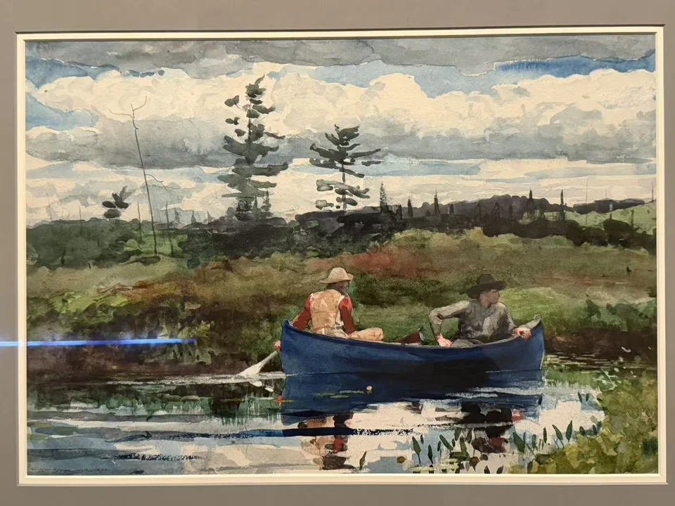
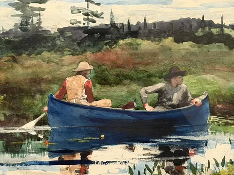

WINSLOW HOMER / LOOK CLOSER
蓝色小舟
The Blue Boat

- 作者／制作者
- 温斯洛·霍默（Winslow Homer）
- 年代
- 1892
- 媒介
- 石墨底稿上施水彩
- 展签原文
- Watercolor over graphite
- 收藏
- 波士顿美术馆
- 编号
- 26.764
- 观看地点
- 休斯顿美术馆 · Of Light and Air
- 入藏来源
- William Sturgis Bigelow Collection，1926
在画前
舟身的蓝很浓，水里的蓝却被倒影和细碎的亮色打断。两个人一前一后坐着，划桨的动作不大；岸边草木、远处高树和云层仍占着画面的大部分。湖水将这些东西接在一起，舟像是从岸的颜色里慢慢划了出来。
近看，树冠由短促的笔触拼起，绿色又在湿润处融开。展签把舟中人物认作阿迪朗达克的向导，也是霍默反复描绘的模特。熟悉水路的人与一条轻舟，给这片广阔的自然留下了人的尺度。对喜欢划船的我来说，这种置身其中的感觉，正是重看它的理由。
作品信息与文中展签说明据现场展签 ↗。
走近看局部

